Professor Jennifer A. Prescher
B.S. in Chemistry and Mathematics 2001. University of Wisconsin – La Crosse (Aaron Monte)
Ph.D. in Chemistry 2006, University of California, Berkeley (Carolyn Bertozzi)
Susan G. Komen and Molecular Imaging Fellow, Stanford University, 2007-2010 (Chris Contag)
Assistant Professor, 2010 – Present, University of California, Irvine
Hometown: Blue Earth, MN
Scientific Hero: Frederick Sanger, Rolf Huisgen, Stephen Kent
Recent Awards: ACS Women in Chemistry Rising Star (2016) ● Thieme Chemistry Journal Award (2016) ● Novartis Early Career Award in Organic Chemistry (2015) ● Camille and Henry Dreyfus Teacher-Scholar (2015) ● Alfred P. Sloan Research Fellowship (2015) ● NSF CAREER Award (2014) ● Cottrell Scholar (2014) ● Kavli Fellow (2014) ● UCI Outstanding Contributions to Undergraduate Education Award (2013)
Visiting scholars & Postdocs
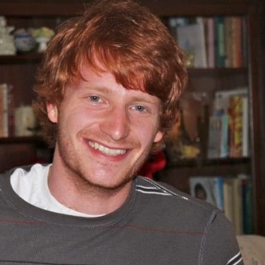
Zach Reinert
Hometown: North East, MD
Education: B.S., Biochemistry, University of Maryland
Ph.D., Chemistry, University of Pittsburgh
Scientific Hero: Albert Einstein
Graduate students
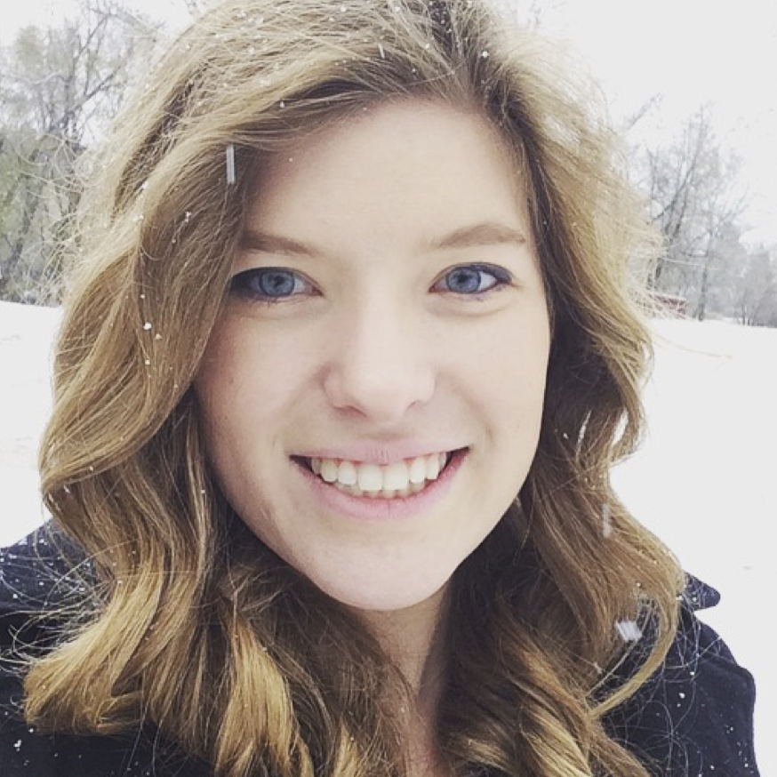
Anya Kent
Hometown: Kahului, Hawaii
Education: B.S. University of Utah
Scientific Hero: Rosalind Franklin
Awards: NSF Graduate Research Fellow (2015-2020)
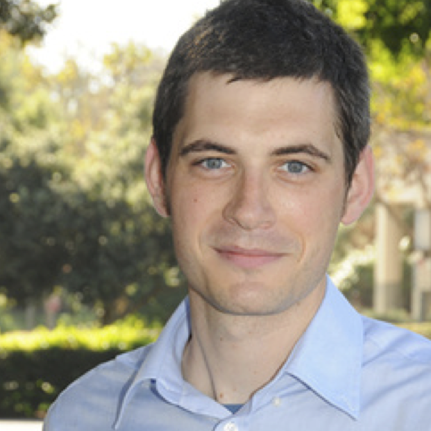
David Row
Hometown: Mos Eisley, Tatooine
Education: B.S., Biochemistry, Western Washington University
Scientific Hero: Mr. Spock
Awards: NSF Graduate Research Honorable Mention (2015) ● Michael E. Gebel Award (UCI, 2015) ● NSF Graduate Research Fellowship (2016)
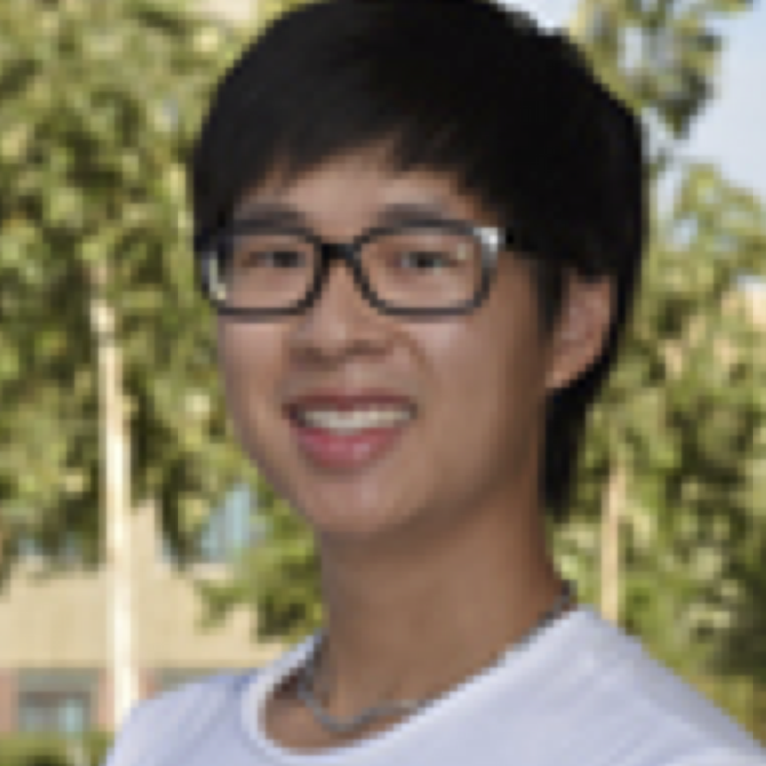
Sean Nguyen
Hometown: Saugus, MA
Education: B.S., Chemical Biology, UC Berkeley
Scientific Hero: Tu Youyou
Awards: NSF Graduate Research Honorable Mention (2016)
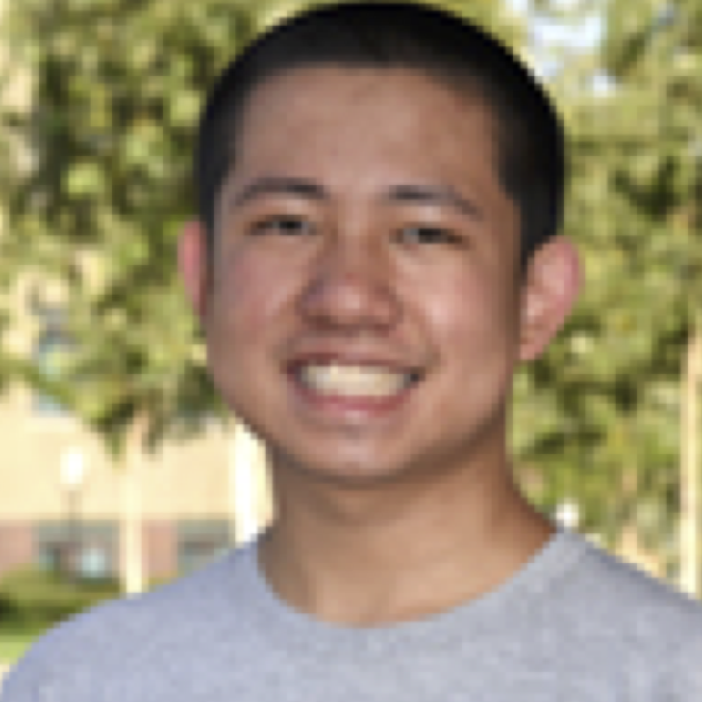
Zi Yao
Hometown: Hayward, CA
Education: B.S., Chemistry, UC Davis
Scientific Hero: Arnold O. Beckman
Awards: NSF Graduate Research Honorable Mention (2016)
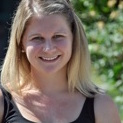
Krysten Jones
Hometown: Langhorne, PA
Education: B.S., Biotechnology, Elizabethtown College
Scientific Hero: Esther Lederberg
Awards: NIH Training Grant Fellow (2014-2017)
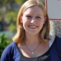
Joanna Laird
Hometown: Los Gatos, CA
Education: B.S., Chemistry, Santa Clara University
Scientific Hero: Rosalind Franklin
Awards: NSF IGERT Fellow (2013-2015)
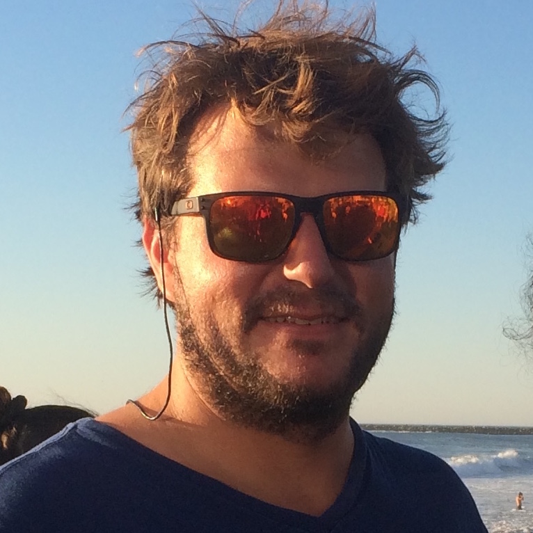
William Porterfield
Hometown: Thousand Oaks, CA
Education: B.A., Biochemistry, University of San Diego
Scientific Hero: Leonardo Da Vinci
Awards: NSF IGERT Fellow (2014-2016) ● NSF Graduate Research Honorable Mention (2014) ● UCI Allergan Fellow (2015-2016) ● IGERT Competetive Innovation Winner (2015-2016)
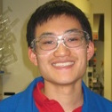
Brendan Zhang
Hometown: Eugene, OR
Education: B.A., Chemistry, Willamette University
Scientific Hero: Frederick Sanger
Awards: GAANN Fellow (UCI, 2013-2015)
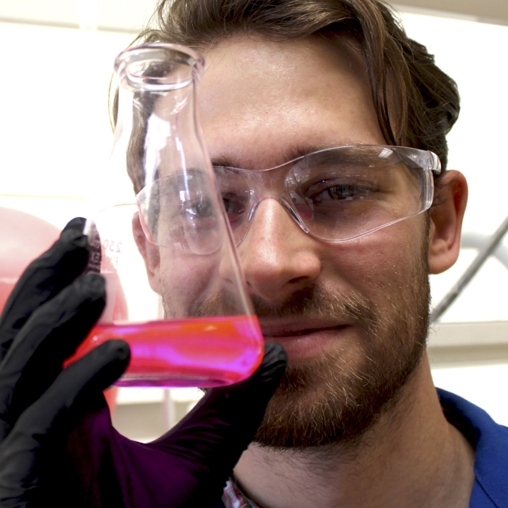
Colin Rathbun
Hometown: Grand Rapids, MI
Education: B.S., Chemistry, Hope College
Scientific Hero: Nicola Tesla
Awards: NSF Graduate Research Fellow (2012-2017)
Undergraduates
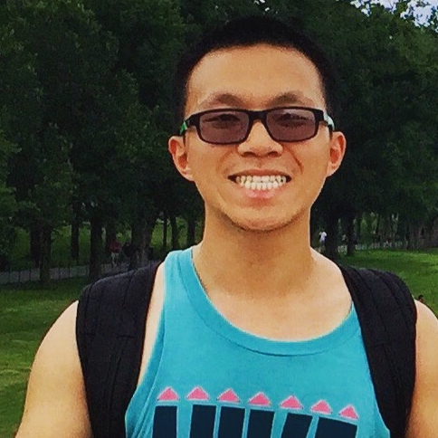
Kevin Yang
Hometown: Chengdu, China
Major: B.S., Chemistry
Scientific Hero: Jenn Prescher
Awards: UCI SURP Fellow (2015) ● Allergan Summer Fellow (2015) ● UROP Fellow (2015-2016) ● Pfizer Undergrad Award in Organic Chemistry (2016)
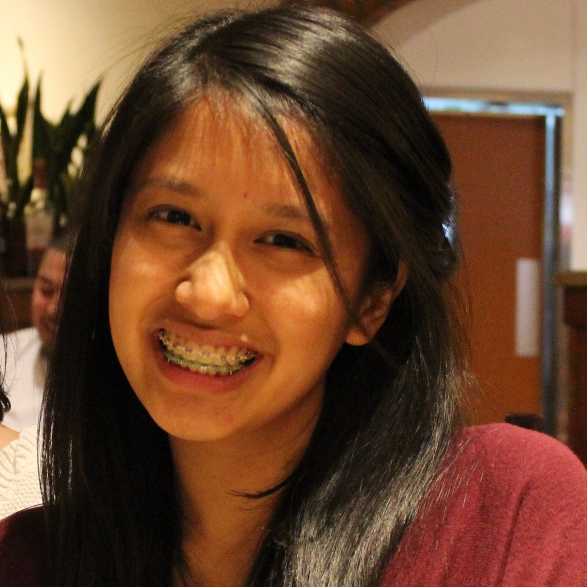
Monique Reyes
Hometown: Los Angeles, CA
Major: B.S., Pharm Sci
Scientific Hero: Jenn Prescher
Awards: UCI SURP Fellow (2015) ● Allergan Summer Fellow (2015) ● UROP Fellow (2015-2016)
Marian Sagoe
Hometown: Fontana, CA
Major: B.S., Chemistry
Scientific Hero: Rosalind Franklin
Awards: UCI SURP Fellow (2015) ● Allergan Summer Fellow (2015) ● UROP Fellow (2015-2016)
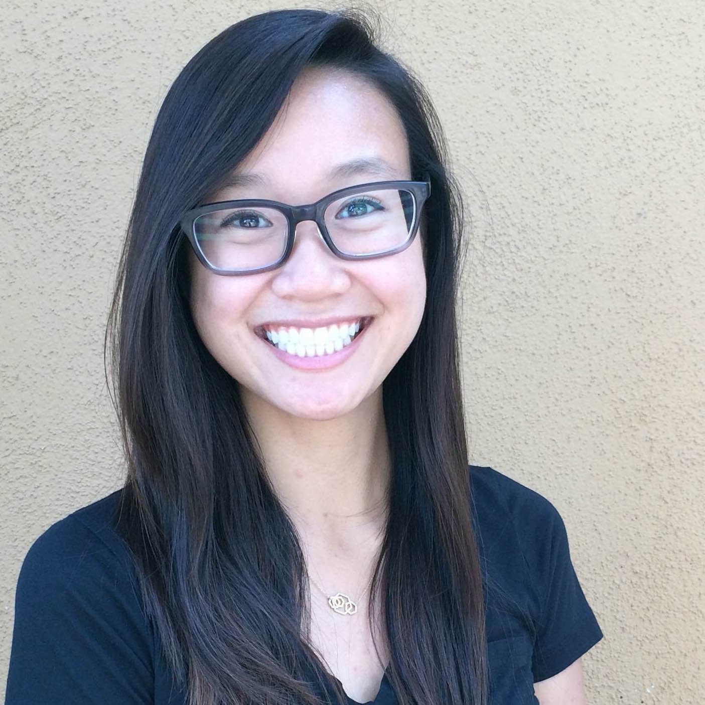